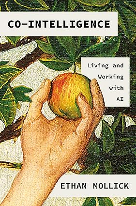
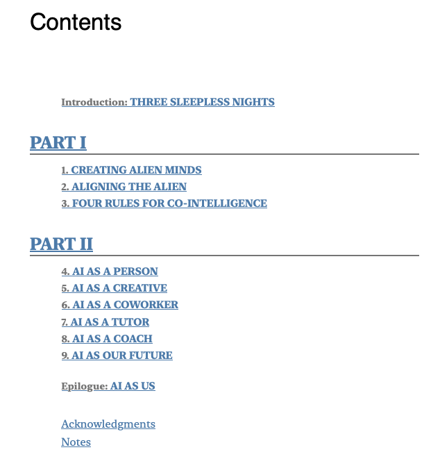
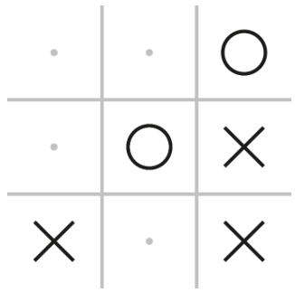
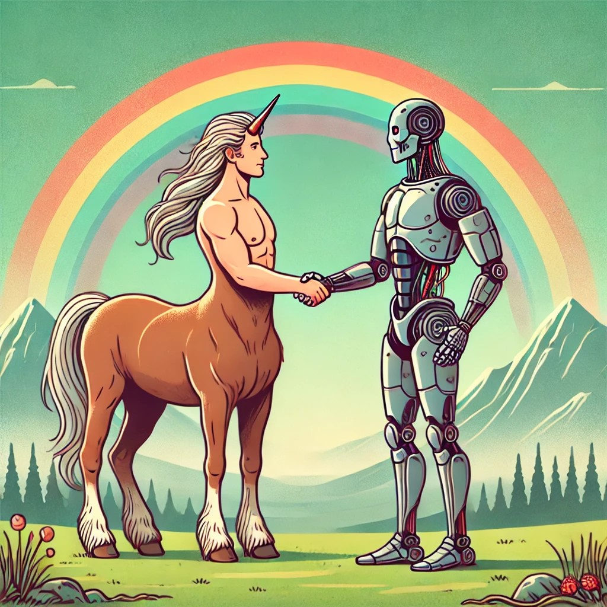
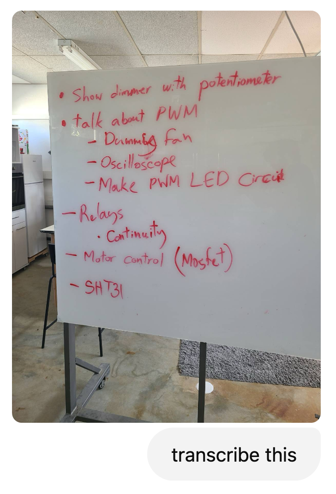
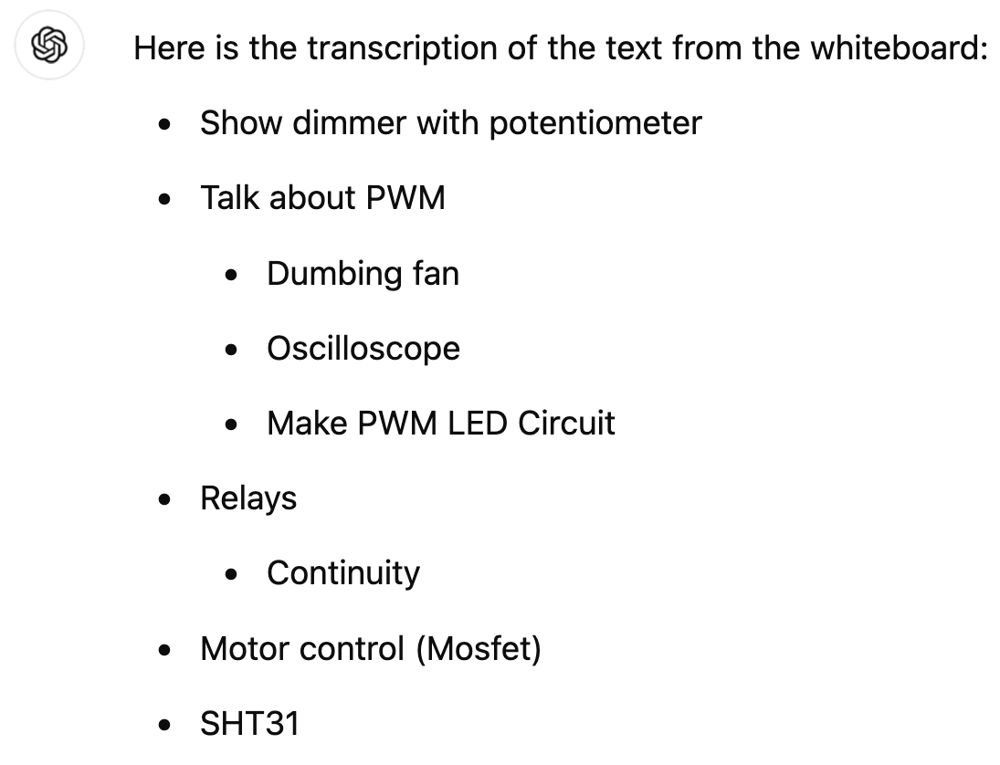
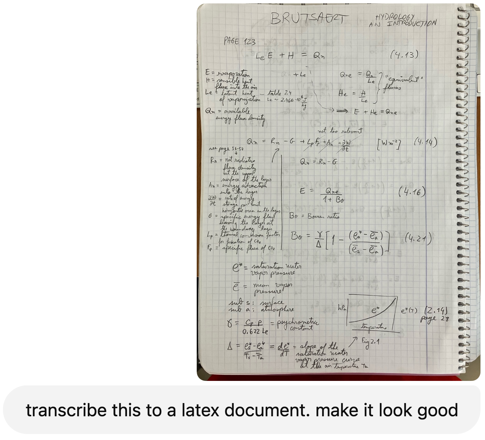

Give AI the stuff you don’t wanna do
and more
sora.com, 5 minutes of play
in a bucolic farm, we see a zoo, where all the animals are living origami creatures in the style of Robert Lang’s creations. the animals move and are each the size of a car: elephant, t-rex, moose, praying mantis

Ethan Mollick’s book

Ethan Mollick’s book

Ethan Mollick
Ethan Mollick
Co-Intelligence
The idea of using AI as a collaborator to achieve a human goal.
4 co-intelligent principles
always invite AI to the table
always invite AI to the table
What is the best next move for

Write a full JavaScript webpage to play tic-tac-toe against the computer; it needs to be completely working code. Here are the rules:
- The computer goes first.
- The person clicks on squares to make their move.
- The computer should play perfectly and so never lose.
- If someone wins, then say who won.
always invite AI to the table
Identify the Jagged Frontier of AI.
Learn the AI’s strengths and weaknesses through continuous experimentation.
be the human in the loop
be the human in the loop
You need to provide
- crucial oversight
- your unique perspective
- critical thinking skills
- ethical considerations
Beware of hallucinations or of the AI wanting to give you BS answers just to keep you happy.
treat AI like a person
(but tell it what kind of person it is)
treat AI like a person
- write this in the style of…
- I’m stuck, help me finish this paragraph, give me 10 possible endings
- I need creative names for my manuscript title, give me 10 options based on the attached pdf
- check this paragraph for coherence, flow, grammar. Don’t change the ideas nor the order they are in
treat AI like a person
- the transition between these two paragraphs is too abrupt, help me find a good transition, give me 5 options
- Be the proverbial reviewer number 2: check this manuscript and give me your best criticism
- I want to cite this paper in my manuscript because I think it supports the following assertion. Does it really?
treat AI like a person
- I can’t find a good citation for this claim. Suggest 5 relevant papers.
- I need to buy my father a birthday gift, I’m thinking of a smart watch. Recommend me 5 good options below $400.
- take a critical look at the goals and hypothesis in this proposal I wrote
3 kinds of tasks
Just Me Tasks
- tasks in which the AI is not useful and only gets in the way, at least for now
- tasks that you strongly believe should remain human, with no AI help
3 kinds of tasks
Delegated Tasks
- tasks that you assign the AI and may carefully check (the AI makes stuff up all the time), but ultimately do not want to spend a lot of time on.
- usually stuff you really don’t want to do and is of low importance, or time-consuming
- the perfect Delegated Task is tedious, repetitive, or boring for humans but easy and efficient for AI.
3 kinds of tasks
Automated Tasks
- tasks you leave completely to the AI and don’t even check on
usually we stop calling the algorithm “AI” at this point
assume this is the worst AI you will ever use
assume this is the worst AI you will ever use
“Otter on a plane using wifi”, November 2022
assume this is the worst AI you will ever use
“Otter on a plane using wifi”, August 2024 (+22 months)
If you don’t wanna read the book…
(though you should, it’s quite good)
… you can read a few blog posts by Mollick
<Centaurs and Cyborgs on the Jagged Frontier>

live chat:
- Chat about something you want to learn about
- Have your kids use it for homework
voice input instead of text input:
- When you’re not sure how to explain something, just talk to it. Give it your random thoughts and the AI will return a sensible paragraph to you



Right now, there is no good way of exporting to proprietary formats, e.g. Word, Excel, etc.
You can use instead
- markdown
- LaTeX
- other Open Source formats
Integration is
- GitHub Copilot
+ VS Code - Gemini
+ Google apps … - ChatGPT Canvas
- Adobe Firefly
+ Photoshop - Adobe Firefly Video
+ Premiere Pro - tell me your own experience
The
We did not discuss today is the impact of generative AI on learning
…